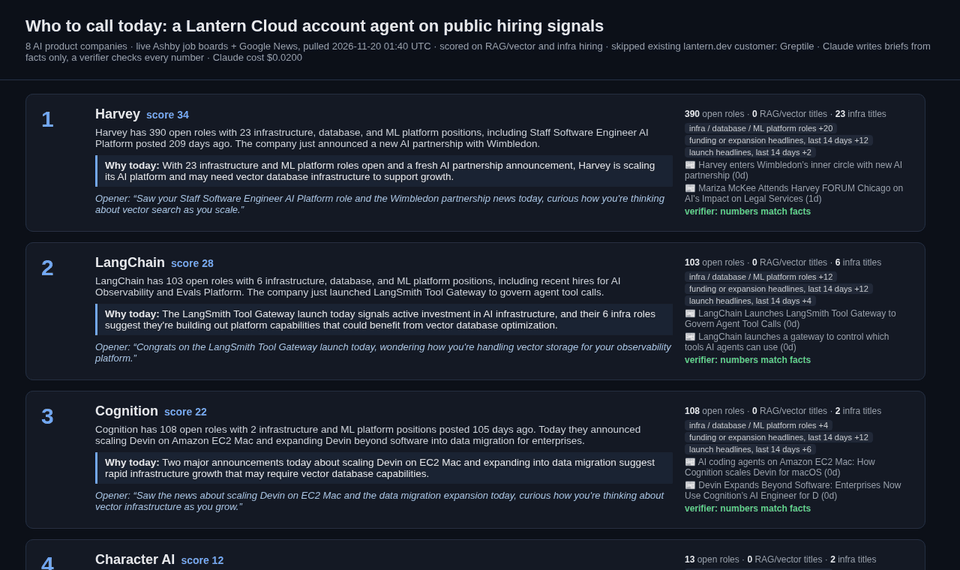

Built by Gursimar Singh, Nov 2026, on real public data

The agent reads live job boards and the last 30 days of news for 8 AI product companies and ranks who a Lantern Cloud seller should call today, based on RAG, vector and infrastructure hiring. Greptile was flagged as an existing lantern.dev customer and left off the prospect list. Harvey ranked first, with 390 open roles and 23 infrastructure, database and ML platform titles.
What I'd improve next: watch engineering blogs and changelog pages for vector or Postgres mentions, and refresh scores daily as new infra roles appear.